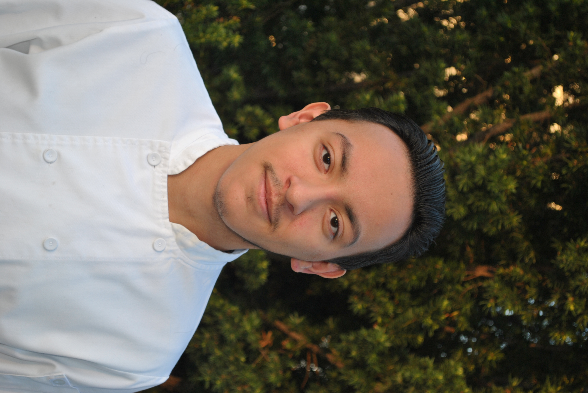

Our Story

Durone at Home started in 2024 with a simple mission: to bring homemade Italian cooking directly to your dining room table. We believe in quality ingredients, traditional recipes, and the joy of sharing a meal. All in the comfort and the style tailored towards each and every guest.
Our founder, Chef Duron, has over 10 years of experience in hospitality. Chef Duron has studied and worked at so many locations and worked under various chefs.